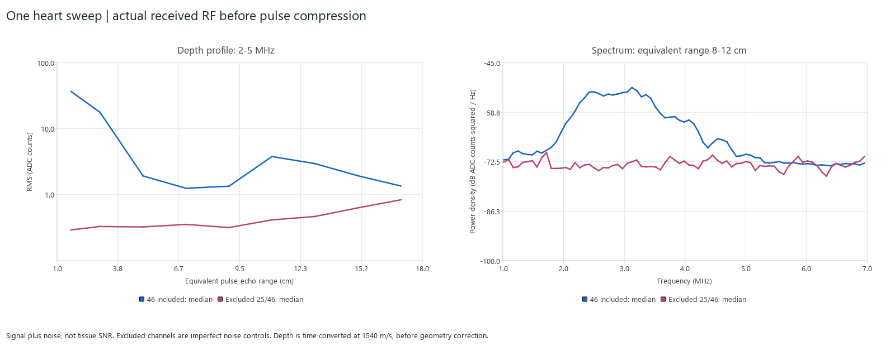
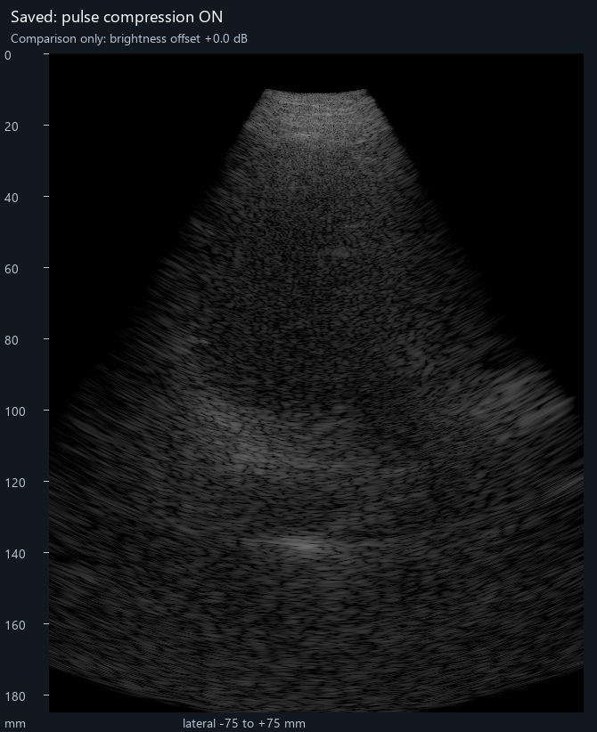
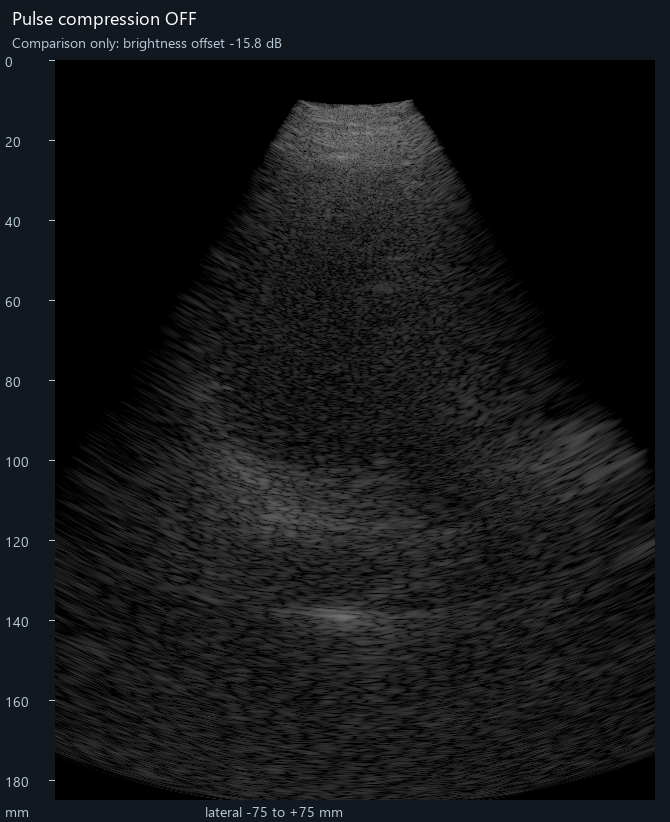
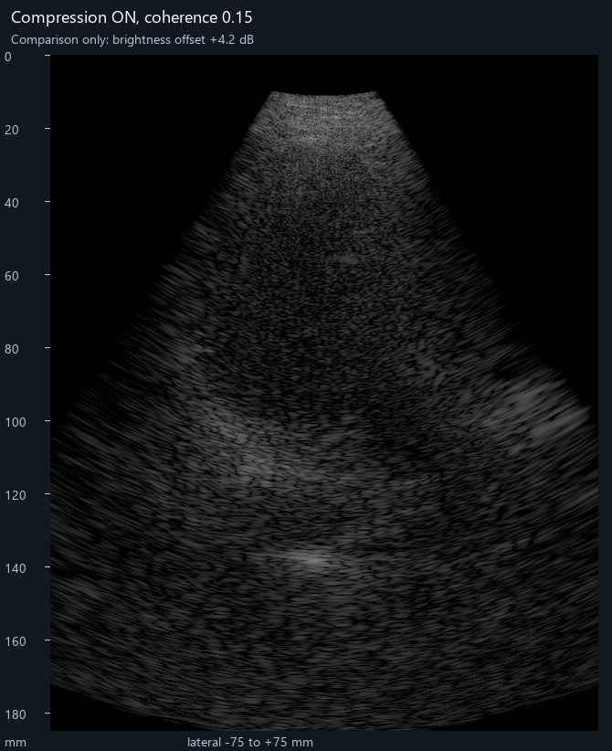
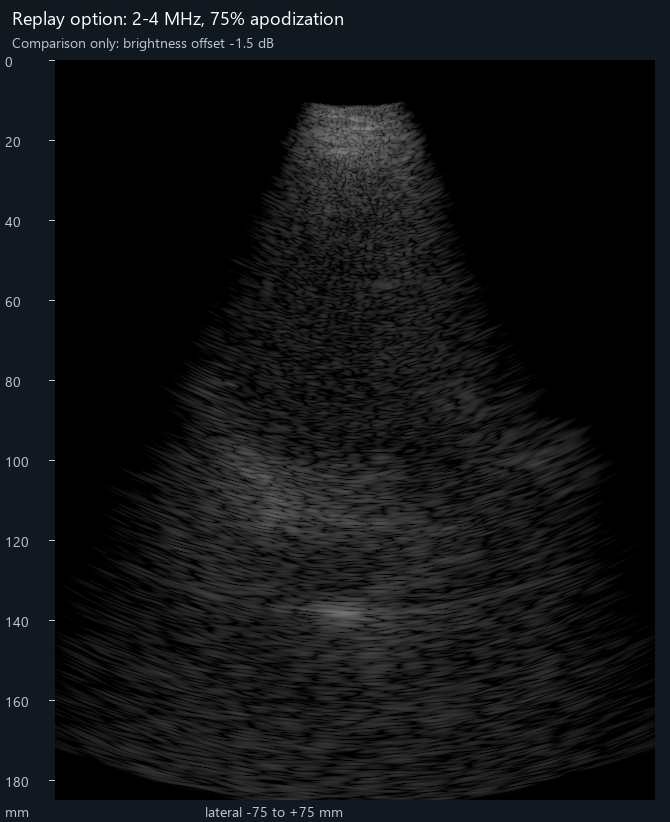
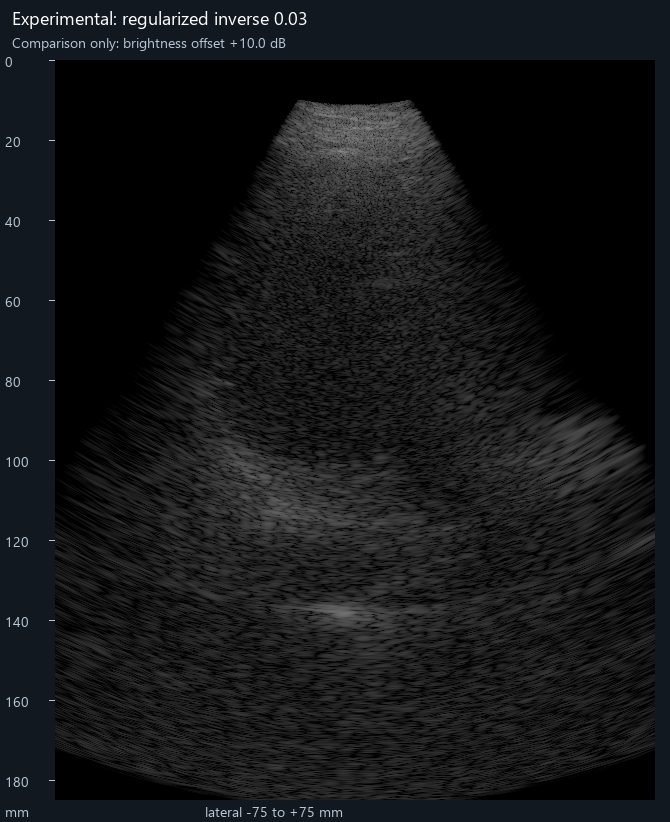

September 9, 2026 · host/heart-chirp.rf.npz · one complete sweep, 48 × 9090 RF samples. The matching screenshot is host/settings/20260909_140323_711624200.png. All work here is offline.
The file contains useful deep echoes, but these comparisons do not establish resolved chamber walls. Thirteen reconstructions were inspected. Pulse compression gives finer axial texture in parts of the image; lateral arcs remain. No tested decoder demonstrated a convincing anatomical recovery. A single sweep cannot separate heart/probe motion, aberration, reverberation and hardware timing effects.
Choose two variants. “Matched brightness” applies a single scalar offset to match the 90th-percentile normalized magnitude in the fixed central region (±25 mm lateral, 40–140 mm depth). It helps compare structure; it is not an SNR measurement. Both images use a common 100 dB / +12 dB display in that mode. No local contrast enhancement or generated detail is used.
The uncompressed view requires a −15.85 dB comparison offset. The host normalizes its matched filter by reference energy; raw and compressed amplitudes therefore differ. This offset must not be reported as 15.85 dB of SNR gain.

| Equivalent range | Included-channel median RMS | Excluded-pair median RMS |
|---|---|---|
| 6-8 cm | 1.250 | 0.354 |
| 8-10 cm | 1.343 | 0.317 |
| 10-12 cm | 3.786 | 0.415 |
| 12-14 cm | 2.961 | 0.467 |
| 14-16 cm | 1.936 | 0.631 |
| 16-18 cm | 1.355 | 0.836 |
ADC counts. Fourth-order Butterworth 2–5 MHz filter with zero-phase forward/backward filtering, applied only for these measurements. The reconstructed images use the production receive filter. Channels 25/46 have different electrical terminations and are not calibrated noise references.
At 10–12 cm the median is 3.79 counts versus 0.42 for the excluded pair. This makes “nothing but the ADC floor at all depths” an inadequate explanation for this recording. The excess can contain tissue echoes, reverberation and clutter; it does not prove that the broad bright regions are chamber walls. Most deep excess power is around 2–4 MHz; 5–6 MHz is close to the excluded-channel spectrum. Position and acquisition settings changed from older clips, so this is not a controlled measurement of chirp benefit.
analyze.py implements those extra filters.The central-region coherence median was 0.0144 (90th percentile 0.0624). This indicates weak phase agreement over much of that region, but the statistic mixes many scatterers, noise and clutter. It cannot by itself identify a timing defect or quantify motion.
Keep pulse compression on, receive 2–4 MHz, apodization 75%, coherence 0, averaging 1. A display of 85 dB range / +27 dB gain makes the broad echoes easier to inspect. It does not recover new RF information. View it or use the saved configuration. In a frozen RF review, change these processing controls directly; the host's acquisition-settings loader requires a new live run.
On the water bench, compare the existing broad chirp with a 2–5 MHz chirp at the same duration and peak drive, and include a short-pulse reference. Keep the wire, gain, delay and receive processing fixed. Save complete RF for each. Measure axial width, range sidelobes and background level before choosing a waveform. Concentrating the sweep in the useful band is a testable hypothesis; its actual benefit and acoustic output have not been measured here.
Use an isolated, unsaturated wire return to estimate the actual echo waveform and its delay. Then compare the commanded-reference filter with a measured-response matched or regularized mismatched filter. Do not learn a supposedly “correct” pulse from an unidentified heart echo: overlapping reflectors and reverberation would be absorbed into that calibration. Pulse-compression design needs to account for transducer response and the resolution/sidelobe tradeoff; see Misaridis & Jensen, 2005.
No FPGA or production-host algorithm change is justified by these results alone. Receive capture begins after this 4.48 µs transmit burst, so direct burst overlap is not indicated by the requested timing. Analog recovery still needs measurement. The 28.09 ms sequential aperture remains a possible motion limitation, and one exported frame contains no time sequence with which to estimate it.
Gallery uses matched brightness. Click an image for its saved display. Experimental cases are explicitly labeled.





SIM-only analysis and reconstruction · Measurements and source hash · Spectra and channel envelopes · Report builder. Each trial includes linear magnitude, settings and method metadata. Source RF and its screenshot remain unchanged; no hardware connection or programming was used.